3. Methods for Determining Phenomenological Rate Coefficients¶
Solving the energy-grained master equation is often prohibitively expensive for chemical reaction mechanisms of even modest size. Instead, we seek to reduce the master equation matrix down to a set of phenomenological rate coefficients 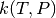. In particular, we need to replace the isomer population distributions 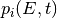 with the corresponding time-dependent total isomer populations 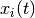.
Three methods of varying rigor, computational cost, and robustness will be discussed in the upcoming sections. The modified strong collision (MSC) method is the fastest and most robust, but utilizes the least realistic approximations. The reservoir state (RS) method uses better approximations, which leads to increased accuracy, but requires more computational effort. Finally, the chemically-significant eigenvalues (CSE) method is the most theoretically sound, but is very computationally expensive and not very robust. Your choice of method will depend on the particular balance between expense, robustness, and rigor that is required for your intended application.
3.1. A Common Formalism¶
All of the methods discussed here can be expressed in terms of a common
formalism. Each method seeks to express the population distribution vector
for each unimolecular isomer  as a linear
combination of the total populations 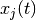 and
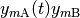 of unimolecular isomers
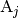 and reactant channels 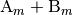:
as a linear
combination of the total populations 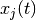 and
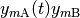 of unimolecular isomers
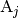 and reactant channels 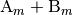:

The function 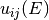 represents the portion of the population
distribution of unimolecular isomer at energy  that tracks
the population of isomer
that tracks
the population of isomer  . In the modified strong collision and
reservoir state methods, this is because the energy levels of isomer
are in pseudo-steady-state relationships with isomer . The
interpretation is a bit different for the chemically-significant eigenvalues
method, but the form of the equations is the same. Similarly, the function
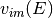 represents the population distribution of unimolecular isomer
at energy that tracks the population of reactant channel
. In the modified strong collision and
reservoir state methods, this is because the energy levels of isomer
are in pseudo-steady-state relationships with isomer . The
interpretation is a bit different for the chemically-significant eigenvalues
method, but the form of the equations is the same. Similarly, the function
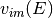 represents the population distribution of unimolecular isomer
at energy that tracks the population of reactant channel
 . Both functions and are functions
of energy only, and not of time.
. Both functions and are functions
of energy only, and not of time.
After discretizing the energy domain, the above becomes
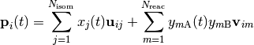
The phenomenological rate coefficients can be constructed from the energy-grained master equation matrix and the vectors 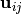 and 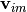:
![k_{ij}(T,P) &= \sum_{s=1}^{N_\mathrm{grains}} \left( \matrix{M}_i \vector{u}_{ij} \right)_s +
\sum_{\ell \ne i}^{N_\mathrm{isom}} \sum_{s=1}^{N_\mathrm{grains}} \left( \matrix{K}_{i \ell} \vector{u}_{\ell j} \right)_s \\
k_{im}(T,P) &= \sum_{s=1}^{N_\mathrm{grains}} \left( \matrix{M}_i \vector{v}_{im} \right)_s +
\sum_{\ell \ne i}^{N_\mathrm{isom}} \sum_{s=1}^{N_\mathrm{grains}} \left( \matrix{K}_{i \ell} \vector{v}_{\ell m} \right)_s + \sum_{s=1}^{N_\mathrm{grains}} \left( \matrix{F}_{im} \vector{b}_m \right)_s \\
k_{nj}(T,P) &= \sum_{\ell=1}^{N_\mathrm{isom}} \vector{g}_{n \ell} \cdot \vector{u}_{\ell j} \\
k_{nm}(T,P) &= \sum_{\ell=1}^{N_\mathrm{isom}} \vector{g}_{n \ell} \cdot \vector{v}_{\ell m}](../../_images/math/844b9a3d209aa1dfc9accacd2912606da906f9bd.png)
Above, the indices and represent unimolecular isomers of
the initial adduct, represents bimolecular reactants,  represents bimolecular reactants and products, and
represents bimolecular reactants and products, and  represents an
energy grain. Thus, the rate coefficients above are for isomerization,
association, dissociation, and bimolecular reactions, respectively.
represents an
energy grain. Thus, the rate coefficients above are for isomerization,
association, dissociation, and bimolecular reactions, respectively.
The output from each of the three methods is a set of phenomenological rate coefficients and the vectors and which can be used to construct the approximate population distribution predicted by that method.